- Explain Max Planck’s contribution to the development of quantum mechanics.
- Explain why atomic spectra indicate quantization.
Energy is quantized in some systems, meaning that the system can have only certain energies and not a continuum of energies, unlike the classical case. This would be like having only certain speeds at which a car can travel because its kinetic energy can have only certain values. We also find that some forms of energy transfer take place with discrete lumps of energy. While most of us are familiar with the quantization of matter into lumps called atoms, molecules, and the like, we are less aware that energy, too, can be quantized. Some of the earliest clues about the necessity of quantum mechanics over classical physics came from the quantization of energy.
![The blackbody radiation graph of E M radiation intensity versus wavelengths is shown, with the visible band represented as vertical colored strip marked on x axis. Wavelength is along x axis and E M radiation intensity is along y axis. The variation of E M radiation intensity is shown by three curves that start at origin, rise up to their highest point and then drop toward the x axis smoothly, and finally extend parallel to the x axis. There are three curves for three different temperatures, and each has a different peak for radiation intensity. As the temperature decreases, the peak of the black body radiation curves moves to a lower radiation intensity and longer wavelength.](images/ch29/fig29-3-the-blackbody-radiation-graph-of-e-m-rad.jpg)
Where is the quantization of energy observed? Let us begin by considering the emission and absorption of electromagnetic (EM) radiation. The EM spectrum radiated by a hot solid is linked directly to the solid’s temperature (Figure An ideal radiator is one that has an emissivity of 1 at all wavelengths and, thus, is jet black. Ideal radiators are therefore calledblackbodies, and their EM radiation is calledblackbody radiation. It was discussed that the total intensity of the radiation varies as \(T^4\), the fourth power of the absolute temperature of the body, and that the peak of the spectrum shifts to shorter wavelengths at higher temperatures. All of this seems quite continuous, but it was the curve of the spectrum of intensity versus wavelength that gave a clue that the energies of the atoms in the solid are quantized. In fact, providing a theoretical explanation for the experimentally measured shape of the spectrum was a mystery at the turn of the century. When this “ultraviolet catastrophe” was eventually solved, the answers led to new technologies such as computers and the sophisticated imaging techniques described in earlier chapters. Once again, physics as an enabling science changed the way we live.
The German physicist Max Planck (1858–1947) used the idea that atoms and molecules in a body act like oscillators to absorb and emit radiation. The energies of the oscillating atoms and molecules had to be quantized to correctly describe the shape of the blackbody spectrum. Planck deduced that the energy of an oscillator having a frequency \(f\) is given by
Here \(n\) is any nonnegative integer (0, 1, 2, 3, …). The symbol \(h\) stands forPlanck’s constant, given by
\[h = 6.626 \times 10^{-34} \, J \cdot s.\] The equation \(E = (n + \frac{1}{2}) hf\) means that an oscillator having a frequency \(f\) (emitting and absorbing EM radiation of frequency \(f\)) can have its energy increase or decrease only indiscretesteps of size
It might be helpful to mention some macroscopic analogies of this quantization of energy phenomena. This is like a pendulum that has a characteristic oscillation frequency but can swing with only certain amplitudes. Quantization of energy also resembles a standing wave on a string that allows only particular harmonics described by integers. It is also similar to going up and down a hill using discrete stair steps rather than being able to move up and down a continuous slope. Your potential energy takes on discrete values as you move from step to step.
Using the quantization of oscillators, Planck was able to correctly describe the experimentally known shape of the blackbody spectrum. This was the first indication that energy is sometimes quantized on a small scale and earned him the Nobel Prize in Physics in 1918. Although Planck’s theory comes from observations of a macroscopic object, its analysis is based on atoms and molecules. It was such a revolutionary departure from classical physics that Planck himself was reluctant to accept his own idea that energy states are not continuous. The general acceptance of Planck’s energy quantization was greatly enhanced by Einstein’s explanation of the photoelectric effect (discussed in the next section), which took energy quantization a step further. Planck was fully involved in the development of both early quantum mechanics and relativity. He quickly embraced Einstein’s special relativity, published in 1905, and in 1906 Planck was the first to suggest the correct formula for relativistic momentum, \(p = \gamma mu\).
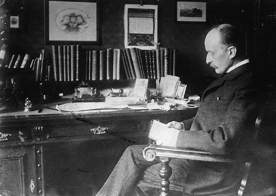
Note that Planck’s constant \(h\) is a very small number. So for an infrared frequency of \(10^{14}\) being emitted by a blackbody, for example, the difference between energy levels is only \(\Delta E = hf = (6.63 \times 10^{-34} \, J \cdot s)(10^{14} \, Hz) = 6.63 \times 10^{-20} \, J\), or about 0.4 eV. This 0.4 eV of energy is significant compared with typical atomic energies, which are on the order of an electron volt, or thermal energies, which are typically fractions of an electron volt. But on a macroscopic or classical scale, energies are typically on the order of joules. Even if macroscopic energies are quantized, the quantum steps are too small to be noticed. This is an example of the correspondence principle. For a large object, quantum mechanics produces results indistinguishable from those of classical physics.
Now let us turn our attention to theemission and absorption of EM radiation by gases. The Sun is the most common example of a body containing gases emitting an EM spectrum that includes visible light. We also see examples in neon signs and candle flames. Studies of emissions of hot gases began more than two centuries ago, and it was soon recognized that these emission spectra contained huge amounts of information. The type of gas and its temperature, for example, could be determined. We now know that these EM emissions come from electrons transitioning between energy levels in individual atoms and molecules; thus, they are calledatomic spectra. Atomic spectra remain an important analytical tool today. Figure shows an example of an emission spectrum obtained by passing an electric discharge through a material. One of the most important characteristics of these spectra is that they are discrete. By this we mean that only certain wavelengths, and hence frequencies, are emitted. This is called a line spectrum. If frequency and energy are associated as \(\Delta E = hf\), the energies of the electrons in the emitting atoms and molecules are quantized. This is discussed in more detail later in this chapter.
It was a major puzzle that atomic spectra are quantized. Some of the best minds of 19th-century science failed to explain why this might be. Not until the second decade of the 20th century did an answer based on quantum mechanics begin to emerge. Again a macroscopic or classical body of gas was involved in the studies, but the effect, as we shall see, is due to individual atoms and molecules.
PHET EXPLORATIONS: MODELS OF THE HYDROGEN ATOM
How did scientists figure out the structure of atoms without looking at them? Try out different models by shooting light at the atom. Check how the prediction of the model matches the experimental results.
📖 OpenStax College Physics, Section 29.1. openstax.org · CC BY 4.0
- Describe a typical photoelectric-effect experiment.
- Determine the maximum kinetic energy of photoelectrons ejected by photons of one energy or wavelength, when given the maximum kinetic energy of photoelectrons for a different photon energy or wavelength.
When light strikes materials, it can eject electrons from them. This is called thephotoelectric effect, meaning that light (photo) produces electricity. One common use of the photoelectric effect is in light meters, such as those that adjust the automatic iris on various types of cameras. In a similar way, another use is in solar cells, as you probably have in your calculator or have seen on a roof top or a roadside sign. These make use of the photoelectric effect to convert light into electricity for running different devices.
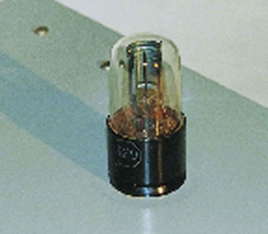
This effect has been known for more than a century and can be studied using a device such as that shown in Figure . This figure shows an evacuated tube with a metal plate and a collector wire that are connected by a variable voltage source, with the collector more negative than the plate. When light (or other EM radiation) strikes the plate in the evacuated tube, it may eject electrons. If the electrons have energy in electron volts (eV) greater than the potential difference between the plate and the wire in volts, some electrons will be collected on the wire. Since the electron energy in eV is \(qV\), where \(q\) is the electron charge and \(V\) is the potential difference, the electron energy can be measured by adjusting the retarding voltage between the wire and the plate. The voltage that stops the electrons from reaching the wire equals the energy in eV. For example, if \(-3.00 \, V\) barely stops the electrons, their energy is 3.00 eV. The number of electrons ejected can be determined by measuring the current between the wire and plate. The more light, the more electrons; a little circuitry allows this device to be used as a light meter.
What is really important about the photoelectric effect is what Albert Einstein deduced from it. Einstein realized that there were several characteristics of the photoelectric effect that could be explained only ifEM radiation is itself quantized: the apparently continuous stream of energy in an EM wave is actually composed of energy quanta called photons. In his explanation of the photoelectric effect, Einstein defined a quantized unit or quantum of EM energy, which we now call aphoton, with an energy proportional to the frequency of EM radiation. In equation form, thephoton energyis \[E = hf,\] where \(E\) is the energy of a photon of frequency \(f\) and \(h\) is Planck’s constant. This revolutionary idea looks similar to Planck’s quantization of energy states in blackbody oscillators, but it is quite different. It is the quantization of EM radiation itself. EM waves are composed of photons and are not continuous smooth waves as described in previous chapters on optics. Their energy is absorbed and emitted in lumps, not continuously. This is exactly consistent with Planck’s quantization of energy levels in blackbody oscillators, since these oscillators increase and decrease their energy in steps of \(hf\) by absorbing and emitting photons having \(E = hf\). We do not observe this with our eyes, because there are so many photons in common light sources that individual photons go unnoticed (Figure . The next section of the text (Photon Energies and the Electromagnetic Spectrum) is devoted to a discussion of photons and some of their characteristics and implications. For now, we will use the photon concept to explain the photoelectric effect, much as Einstein did.
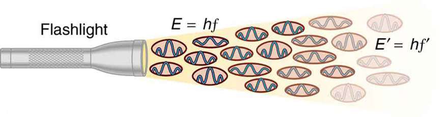
The photoelectric effect has the properties discussed below. All these properties are consistent with the idea that individual photons of EM radiation are absorbed by individual electrons in a material, with the electron gaining the photon’s energy. Some of these properties are inconsistent with the idea that EM radiation is a simple wave. For simplicity, let us consider what happens with monochromatic EM radiation in which all photons have the same energy \(hf\).
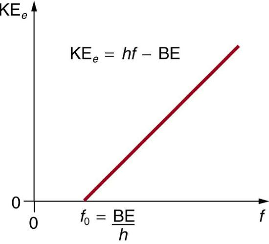
Einstein’s idea that EM radiation is quantized was crucial to the beginnings of quantum mechanics. It is a far more general concept than its explanation of the photoelectric effect might imply. All EM radiation can also be modeled in the form of photons, and the characteristics of EM radiation are entirely consistent with this fact. (As we will see in the next section, many aspects of EM radiation, such as the hazards of ultraviolet (UV) radiation, can be explainedonlyby photon properties.) More famous for modern relativity, Einstein planted an important seed for quantum mechanics in 1905, the same year he published his first paper on special relativity. His explanation of the photoelectric effect was the basis for the Nobel Prize awarded to him in 1921. Although his other contributions to theoretical physics were also noted in that award, special and general relativity were not fully recognized in spite of having been partially verified by experiment by 1921. Although hero-worshipped, this great man never received Nobel recognition for his most famous work—relativity.
To solve part (a), note that the energy of a photon is given by \(E = hf\). For part (b), once the energy of the photon is calculated, it is a straightforward application of \(KE_e = hf - BE\)
to find the ejected electron’s maximum kinetic energy, since BE is given.
Photon energy is given by \[E = hf\] Since we are given the wavelength rather than the frequency, we solve the familiar relationship \(c = f \lambda\) for the frequency, yielding \[f = \dfrac{c}{\lambda}.\]
Now substituting known values yields
Converting to eV, the energy of the photon is
Finding the kinetic energy of the ejected electron is now a simple application of the equation \(KE_e = hf - BE\). Substituting the photon energy and binding energy yields
The energy of this 420-nm photon of violet light is a tiny fraction of a joule, and so it is no wonder that a single photon would be difficult for us to sense directly—humans are more attuned to energies on the order of joules. But looking at the energy in electron volts, we can see that this photon has enough energy to affect atoms and molecules. A DNA molecule can be broken with about 1 eV of energy, for example, and typical atomic and molecular energies are on the order of eV, so that the UV photon in this example could have biological effects. The ejected electron (called aphotoelectron) has a rather low energy, and it would not travel far, except in a vacuum. The electron would be stopped by a retarding potential of but 0.26 eV. In fact, if the photon wavelength were longer and its energy less than 2.71 eV, then the formula would give a negative kinetic energy, an impossibility. This simply means that the 420-nm photons with their 2.96-eV energy are not much above the frequency threshold. You can show for yourself that the threshold wavelength is 459 nm (blue light). This means that if calcium metal is used in a light meter, the meter will be insensitive to wavelengths longer than those of blue light. Such a light meter would be completely insensitive to red light, for example.
PHET EXPLORATIONS: PHOTOELECTRIC EFFECT
See how lightknocks electronsoff a metal target, and recreate the experiment that spawned the field of quantum mechanics.
📖 OpenStax College Physics, Section 29.2. openstax.org · CC BY 4.0
- Explain the relationship between the energy of a photon in joules or electron volts and its wavelength or frequency.
- Calculate the number of photons per second emitted by a monochromatic source of specific wavelength and power.
A photon is a quantum of EM radiation. Its energy is given by \(E = hf\) and is related to the frequency \(f\) and wavelength \(\lambda\) of the radiation by
where \(E\) is the energy of a single photon and \(c\) is the speed of light. When working with small systems, energy in eV is often useful. Note that Planck’s constant in these units is
Since many wavelengths are stated in nanometers (nm), it is also useful to know that
These will make many calculations a little easier.
All EM radiation is composed of photons. Figure shows various divisions of the EM spectrum plotted against wavelength, frequency, and photon energy. Previously in this book, photon characteristics were alluded to in the discussion of some of the characteristics of UV, x rays, and \(\gamma\) rays, the first of which start with frequencies just above violet in the visible spectrum. It was noted that these types of EM radiation have characteristics much different than visible light. We can now see that such properties arise because photon energy is larger at high frequencies.
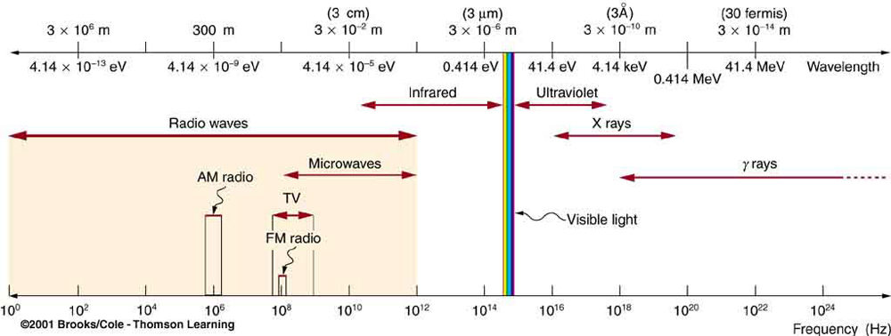
Photons act as individual quanta and interact with individual electrons, atoms, molecules, and so on. The energy a photon carries is, thus, crucial to the effects it has. Table lists representative submicroscopic energies in eV. When we compare photon energies from the EM spectrum in Figure with energies in the table, we can see how effects vary with the type of EM radiation.
| Rotational energies of molecules | \(10^{-5} \, eV\) |
|---|---|
| Vibrational energies of molecules | 0.1 eV |
| Energy between outer electron shells in atoms | 1 eV |
| Binding energy of a weakly bound molecule | 1 eV |
| Energy of red light | 2 eV |
| Binding energy of a tightly bound molecule | 10 eV |
| Energy to ionize atom or molecule | 10 to 1000 eV |
Gamma rays, a form of nuclear and cosmic EM radiation, can have the highest frequencies and, hence, the highest photon energies in the EM spectrum. For example, a \(\gamma\)-ray photon with \(f = 10^{21} \, Hz\) has an energy \(E = hf = 6.63 \times 10^{-13} \, J = 4.14 \, MeV\). This is sufficient energy to ionize thousands of atoms and molecules, since only 10 to 1000 eV are needed per ionization. In fact, \(\gamma\)-rays are one type ofionizing radiation, as are x rays and UV, because they produce ionization in materials that absorb them. Because so much ionization can be produced, a single \(\gamma\)-ray photon can cause significant damage to biological tissue, killing cells or damaging their ability to properly reproduce. When cell reproduction is disrupted, the result can be cancer, one of the known effects of exposure to ionizing radiation. Since cancer cells are rapidly reproducing, they are exceptionally sensitive to the disruption produced by ionizing radiation. This means that ionizing radiation has positive uses in cancer treatment as well as risks in producing cancer.
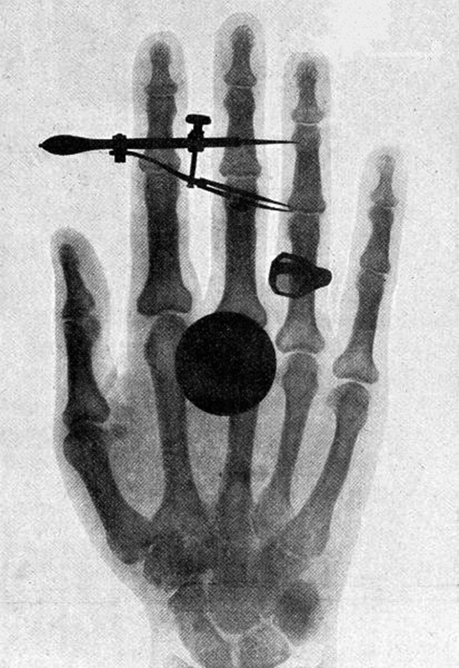
High photon energy also enables \(\gamma\) rays to penetrate materials, since a collision with a single atom or molecule is unlikely to absorb all the \(\gamma\) ray’s energy. This can make \(\gamma\) rays useful as a probe, and they are sometimes used in medical imaging.x rays, as you can see in Figure, overlap with the low-frequency end of the \(\gamma\) ray range. Since x rays have energies of keV and up, individual x-ray photons also can produce large amounts of ionization. At lower photon energies, x rays are not as penetrating as \(\gamma\) rays and are slightly less hazardous. X rays are ideal for medical imaging, their most common use, and a fact that was recognized immediately upon their discovery in 1895 by the German physicist W. C. Roentgen (1845–1923). (See Figure.) Within one year of their discovery, x rays (for a time called Roentgen rays) were used for medical diagnostics. Roentgen received the 1901 Nobel Prize for the discovery of x rays.
CONNECTIONS: CONSERVATION OF ENERGY
Once again, we find that conservation of energy allows us to consider the initial and final forms that energy takes, without having to make detailed calculations of the intermediate steps. Example is solved by considering only the initial and final forms of energy.
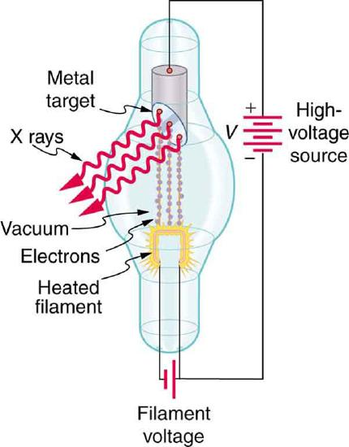
While \(\gamma\) rays originate in nuclear decay, x rays are produced by the process shown in Figure . Electrons ejected by thermal agitation from a hot filament in a vacuum tube are accelerated through a high voltage, gaining kinetic energy from the electrical potential energy. When they strike the anode, the electrons convert their kinetic energy to a variety of forms, including thermal energy. But since an accelerated charge radiates EM waves, and since the electrons act individually, photons are also produced. Some of these x-ray photons obtain the kinetic energy of the electron. The accelerated electrons originate at the cathode, so such a tube is called a cathode ray tube (CRT), and various versions of them are found in older TV and computer screens as well as in x-ray machines.
Find the maximum energy in eV of an x-ray photon produced by electrons accelerated through a potential difference of 50.0 kV in a CRT like the one in Figure .
Electrons can give all of their kinetic energy to a single photon when they strike the anode of a CRT. (This is something like the photoelectric effect in reverse.) The kinetic energy of the electron comes from electrical potential energy. Thus we can simply equate the maximum photon energy to the electrical potential energy—that is, \(hf = qV\). (We do not have to calculate each step from beginning to end if we know that all of the starting energy \(qV\) is converted to the final form \(hf.\))
The maximum photon energy is \(hf = qV\), where \(q\) is the charge of the electron and \(V\) is the accelerating voltage. Thus,
From the definition of the electron volt, we know \(1 \, eV = 1.60 \times 10^{-19} \, J\), where \(1 \, J = 1 \, C \cdot V\). Gathering factors and converting energy to eV yields
This example produces a result that can be applied to many similar situations. If you accelerate a single elementary charge, like that of an electron, through a potential given in volts, then its energy in eV has the same numerical value. Thus a 50.0-kV potential generates 50.0 keV electrons, which in turn can produce photons with a maximum energy of 50 keV. Similarly, a 100-kV potential in an x-ray tube can generate up to 100-keV x-ray photons. Many x-ray tubes have adjustable voltages so that various energy x rays with differing energies, and therefore differing abilities to penetrate, can be generated.
Figure shows the spectrum of x rays obtained from an x-ray tube. There are two distinct features to the spectrum. First, the smooth distribution results from electrons being decelerated in the anode material. A curve like this is obtained by detecting many photons, and it is apparent that the maximum energy is unlikely. This decelerating process produces radiation that is calledbremsstrahlung(German forbraking radiation). The second feature is the existence of sharp peaks in the spectrum; these are calledcharacteristic x rays, since they are characteristic of the anode material. Characteristic x rays come from atomic excitations unique to a given type of anode material. They are akin to lines in atomic spectra, implying the energy levels of atoms are quantized. Phenomena such as discrete atomic spectra and characteristic x rays are explored further in Atomic Physics.
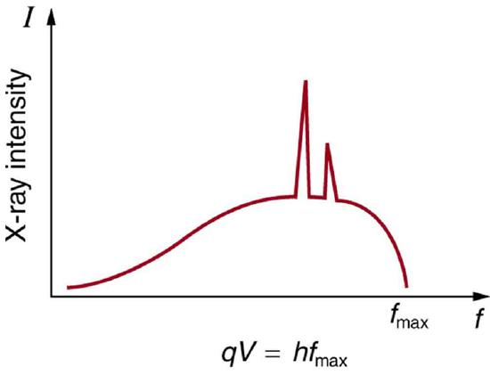
Ultraviolet radiation(approximately 4 eV to 300 eV) overlaps with the low end of the energy range of x rays, but UV is typically lower in energy. UV comes from the de-excitation of atoms that may be part of a hot solid or gas. These atoms can be given energy that they later release as UV by numerous processes, including electric discharge, nuclear explosion, thermal agitation, and exposure to x rays. A UV photon has sufficient energy to ionize atoms and molecules, which makes its effects different from those of visible light. UV thus has some of the same biological effects as rays and x rays. For example, it can cause skin cancer and is used as a sterilizer. The major difference is that several UV photons are required to disrupt cell reproduction or kill a bacterium, whereas single \(\gamma\)-ray and X-ray photons can do the same damage. But since UV does have the energy to alter molecules, it can do what visible light cannot. One of the beneficial aspects of UV is that it triggers the production of vitamin D in the skin, whereas visible light has insufficient energy per photon to alter the molecules that trigger this production. Infantile jaundice is treated by exposing the baby to UV (with eye protection), called phototherapy, the beneficial effects of which are thought to be related to its ability to help prevent the buildup of potentially toxic bilirubin in the blood.
Short-wavelength UV is sometimes called vacuum UV, because it is strongly absorbed by air and must be studied in a vacuum. Calculate the photon energy in eV for 100-nm vacuum UV, and estimate the number of molecules it could ionize or break apart.
Using the equation \(E = hf\)
and appropriate constants, we can find the photon energy and compare it with energy information inTable.
The energy of a photon is given by
Using \(hc = 1240 \, eV \cdot nm\), we find that
According to Table , this photon energy might be able to ionize an atom or molecule, and it is about what is needed to break up a tightly bound molecule, since they are bound by approximately 10 eV. This photon energy could destroy about a dozen weakly bound molecules. Because of its high photon energy, UV disrupts atoms and molecules it interacts with. One good consequence is that all but the longest-wavelength UV is strongly absorbed and is easily blocked by sunglasses. In fact, most of the Sun’s UV is absorbed by a thin layer of ozone in the upper atmosphere, protecting sensitive organisms on Earth. Damage to our ozone layer by the addition of such chemicals as CFC’s has reduced this protection for us.
The range of photon energies forvisible lightfrom red to violet is 1.63 to 3.26 eV, respectively (left for this chapter’s Problems and Exercises to verify). These energies are on the order of those between outer electron shells in atoms and molecules. This means that these photons can be absorbed by atoms and molecules. Asinglephoton can actually stimulate the retina, for example, by altering a receptor molecule that then triggers a nerve impulse. Photons can be absorbed or emitted only by atoms and molecules that have precisely the correct quantized energy step to do so. For example, if a red photon of frequency \(f\) encounters a molecule that has an energy step, \(\Delta E\), equal to \(hf\), then the photon can be absorbed. Violet flowers absorb red and reflect violet; this implies there is no energy step between levels in the receptor molecule equal to the violet photon’s energy, but there is an energy step for the red.
There are some noticeable differences in the characteristics of light between the two ends of the visible spectrum that are due to photon energies. Red light has insufficient photon energy to expose most black-and-white film, and it is thus used to illuminate darkrooms where such film is developed. Since violet light has a higher photon energy, dyes that absorb violet tend to fade more quickly than those that do not. (See Figure .) Take a look at some faded color posters in a storefront some time, and you will notice that the blues and violets are the last to fade. This is because other dyes, such as red and green dyes, absorb blue and violet photons, the higher energies of which break up their weakly bound molecules. (Complex molecules such as those in dyes and DNA tend to be weakly bound.) Blue and violet dyes reflect those colors and, therefore, do not absorb these more energetic photons, thus suffering less molecular damage.
Transparent materials, such as some glasses, do not absorb any visible light, because there is no energy step in the atoms or molecules that could absorb the light. Since individual photons interact with individual atoms, it is nearly impossible to have two photons absorbed simultaneously to reach a large energy step. Because of its lower photon energy, visible light can sometimes pass through many kilometers of a substance, while higher frequencies like UV, x ray, and \(\gamma\) rays are absorbed, because they have sufficient photon energy to ionize the material.
Assuming that 10.0% of a 100-W light bulb’s energy output is in the visible range (typical for incandescent bulbs) with an average wavelength of 580 nm, calculate the number of visible photons emitted per second.
Power is energy per unit time, and so if we can find the energy per photon, we can determine the number of photons per second. This will best be done in joules, since power is given in watts, which are joules per second.
The power in visible light production is 10.0% of 100 W, or 10.0 J/s. The energy of the average visible photon is found by substituting the given average wavelength into the formula
The number of visible photons per second is thus
This incredible number of photons per second is verification that individual photons are insignificant in ordinary human experience. It is also a verification of the correspondence principle—on the macroscopic scale, quantization becomes essentially continuous or classical. Finally, there are so many photons emitted by a 100-W lightbulb that it can be seen by the unaided eye many kilometers away.
Infrared radiation (IR)has even lower photon energies than visible light and cannot significantly alter atoms and molecules. IR can be absorbed and emitted by atoms and molecules, particularly between closely spaced states. IR is extremely strongly absorbed by water, for example, because water molecules have many states separated by energies on the order of \(10^{-5} \, eV\) to \(10^{-2} \, eV\) well within the IR and microwave energy ranges. This is why in the IR range, skin is almost jet black, with an emissivity near 1—there are many states in water molecules in the skin that can absorb a large range of IR photon energies. Not all molecules have this property. Air, for example, is nearly transparent to many IR frequencies.
Microwavesare the highest frequencies that can be produced by electronic circuits, although they are also produced naturally. Thus microwaves are similar to IR but do not extend to as high frequencies. There are states in water and other molecules that have the same frequency and energy as microwaves, typically about \(10^{-5} \, eV\). This is one reason why food absorbs microwaves more strongly than many other materials, making microwave ovens an efficient way of putting energy directly into food.
Photon energies for both IR and microwaves are so low that huge numbers of photons are involved in any significant energy transfer by IR or microwaves (such as warming yourself with a heat lamp or cooking pizza in the microwave). Visible light, IR, microwaves, and all lower frequencies cannot produce ionization with single photons and do not ordinarily have the hazards of higher frequencies. When visible, IR, or microwave radiationishazardous, such as the inducement of cataracts by microwaves, the hazard is due to huge numbers of photons acting together (not to an accumulation of photons, such as sterilization by weak UV). The negative effects of visible, IR, or microwave radiation can be thermal effects, which could be produced by any heat source. But one difference is that at very high intensity, strong electric and magnetic fields can be produced by photons acting together. Such electromagnetic fields (EMF) can actually ionize materials.
MISCONCEPTION ALERT: HIGH VOLTAGE POWER LINES
It is virtually impossible to detect individual photons having frequencies below microwave frequencies, because of their low photon energy. But the photons are there. A continuous EM wave can be modeled as photons. At low frequencies, EM waves are generally treated as time- and position-varying electric and magnetic fields with no discernible quantization. This is another example of the correspondence principle in situations involving huge numbers of photons.
PHET EXPLORATIONS: COLOR VISION
Make a whole rainbow by mixing red, green, and blue light. Change the wavelength of a monochromatic beam or filter white light. View the light as a solid beam, or see the individual photons.

📖 OpenStax College Physics, Section 29.3. openstax.org · CC BY 4.0
- Relate the linear momentum of a photon to its energy or wavelength, and apply linear momentum conservation to simple processes involving the emission, absorption, or reflection of photons.
- Account qualitatively for the increase of photon wavelength that is observed, and explain the significance of the Compton wavelength.
The quantum of EM radiation we call aphotonhas properties analogous to those of particles we can see, such as grains of sand. A photon interacts as a unit in collisions or when absorbed, rather than as an extensive wave. Massive quanta, like electrons, also act like macroscopic particles—something we expect, because they are the smallest units of matter. Particles carry momentum as well as energy. Despite photons having no mass, there has long been evidence that EM radiation carries momentum. (Maxwell and others who studied EM waves predicted that they would carry momentum.) It is now a well-established fact that photonsdohave momentum. In fact, photon momentum is suggested by the photoelectric effect, where photons knock electrons out of a substance. Figure shows macroscopic evidence of photon momentum.

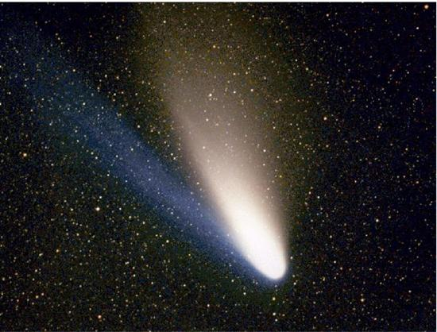
Figure shows a comet with two prominent tails. What most people do not know about the tails is that they always pointawayfrom the Sun rather than trailing behind the comet (like the tail of Bo Peep’s sheep). Comet tails are composed of gases and dust evaporated from the body of the comet and ionized gas. The dust particles recoil away from the Sun when photons scatter from them. Evidently, photons carry momentum in the direction of their motion (away from the Sun), and some of this momentum is transferred to dust particles in collisions. Gas atoms and molecules in the blue tail are most affected by other particles of radiation, such as protons and electrons emanating from the Sun, rather than by the momentum of photons.
Connections: Conservation of Momentum
Not only is momentum conserved in all realms of physics, but all types of particles are found to have momentum. We expect particles with mass to have momentum, but now we see that massless particles including photons also carry momentum.
Momentum is conserved in quantum mechanics just as it is in relativity and classical physics. Some of the earliest direct experimental evidence of this came from scattering of x-ray photons by electrons in substances, named Compton scattering after the American physicist Arthur H. Compton (1892–1962). Around 1923, Compton observed that x rays scattered from materials had a decreased energy and correctly analyzed this as being due to the scattering of photons from electrons. This phenomenon could be handled as a collision between two particles—a photon and an electron at rest in the material. Energy and momentum are conserved in the collision (Figure He won a Nobel Prize in 1929 for the discovery of this scattering, now called theCompton effect, because it helped prove thatphoton momentumis given by
where \(h\) is Planck's constant and \(\lambda\) is the photon wavelength. (Note that relativistic momentum given as \(p = \gamma mu\) is valid only for particles having mass.)
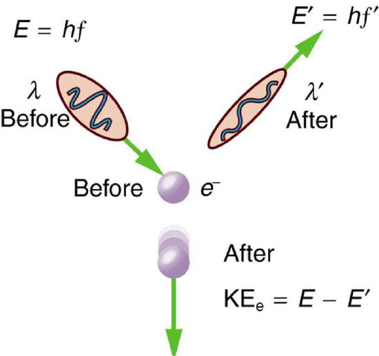
We can see that photon momentum is small, since \(p = h/\lambda\) and \(h\) is very small. It is for this reason that we do not ordinarily observe photon momentum. Our mirrors do not recoil when light reflects from them (except perhaps in cartoons). Compton saw the effects of photon momentum because he was observing x rays, which have a small wavelength and a relatively large momentum, interacting with the lightest of particles, the electron.
Finding the photon momentum is a straightforward application of its definition: \(p = \frac{h}{\lambda}\).
If we find the photon momentum is small, then we can assume that an electron with the same momentum will be nonrelativistic, making it easy to find its velocity and kinetic energy from the classical formulas.
Photon momentum is given by the equation: \[p = \dfrac{h}{\lambda}. \nonumber\]
Entering the given photon wavelength yields
Since this momentum is indeed small, we will use the classical expression \(p = mv\) to find the velocity of an electron with this momentum. Solving for \(v\) and using the known value for the mass of an electron gives
The electron has kinetic energy, which is classically given by
Converting this to eV by multiplying by \((1 \, eV)/(1.602 \times 10^{-19} \, J)\) yields
The photon energy \(E\) is
which is about five orders of magnitude greater.
Photon momentum is indeed small. Even if we have huge numbers of them, the total momentum they carry is small. An electron with the same momentum has a 1460 m/s velocity, which is clearly nonrelativistic. A more massive particle with the same momentum would have an even smaller velocity. This is borne out by the fact that it takes far less energy to give an electron the same momentum as a photon. But on a quantum-mechanical scale, especially for high-energy photons interacting with small masses, photon momentum is significant. Even on a large scale, photon momentum can have an effect if there are enough of them and if there is nothing to prevent the slow recoil of matter. Comet tails are one example, but there are also proposals to build space sails that use huge low-mass mirrors (made of aluminized Mylar) to reflect sunlight. In the vacuum of space, the mirrors would gradually recoil and could actually take spacecraft from place to place in the solar system (Figure .
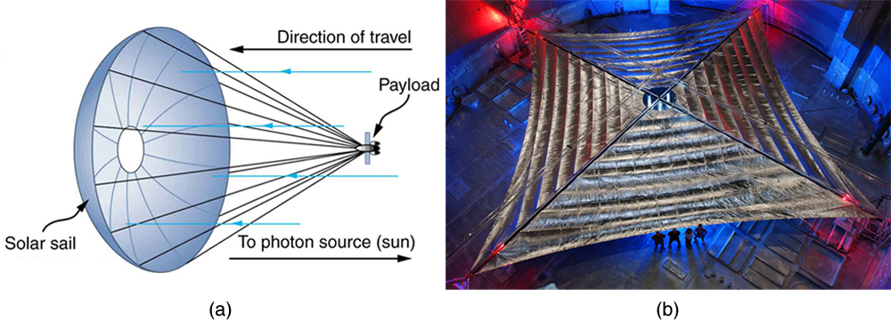
There is a relationship between photon momentum \(p\) and photon energy \(E\) that is consistent with the relation given previously for the relativistic total energy of a particle as
We know \(m\) is zero for a photon, but \(p\) is not, so that Equation \ref{photon1} becomes
To check the validity of this relation, note that \(E = hc/\lambda\) for a photon. Substituting this into \(p = E/c\) yields
as determined experimentally and discussed above. Thus, \(p = E/c\) is equivalent to Compton’s result \(p = h/\lambda.\) For a further verification of the relationship between photon energy and momentum, see Example .
Almost all detection systems talked about thus far—eyes, photographic plates, photomultiplier tubes in microscopes, and CCD cameras—rely on particle-like properties of photons interacting with a sensitive area. A change is caused and either the change is cascaded or zillions of points are recorded to form an image we detect. These detectors are used in biomedical imaging systems, and there is ongoing research into improving the efficiency of receiving photons, particularly by cooling detection systems and reducing thermal effects.
Show that \(p = E/c\) for the photon considered in the Example.
We will take the energy \(E\) found in Example, divide it by the speed of light, and see if the same momentum is obtained as before.
Given that the energy of the photon is 2.48 eV and converting this to joules, we get
This value for momentum is the same as found before (note that unrounded values are used in all calculations to avoid even small rounding errors), an expected verification of the relationship \(p = E/c\). This also means the relationship between energy, momentum, and mass given by \(E^2 = (pc)^2 + (mc)^2 \) applies to both matter and photons. Once again, note that \(p\) is not zero, even when \(m\) is.
PROBLEM-SOLVING SUGGESTIONS
Note that the forms of the constants \(h = 4.14 \times 10^{-15} \, eV \cdot s\) and \(hc = 1240 \, eV \cdot nm\) may be particularly useful for this section’s Problems and Exercises.
📖 OpenStax College Physics, Section 29.4. openstax.org · CC BY 4.0
- Explain what the term particle-wave duality means, and why it is applied to EM radiation.
We have long known that EM radiation is a wave, capable of interference and diffraction. We now see that light can be modeled as photons, which are massless particles. This may seem contradictory, since we ordinarily deal with large objects that never act like both wave and particle. An ocean wave, for example, looks nothing like a rock. To understand small-scale phenomena, we make analogies with the large-scale phenomena we observe directly. When we say something behaves like a wave, we mean it shows interference effects analogous to those seen in overlapping water waves. (Figure Two examples of waves are sound and EM radiation. When we say something behaves like a particle, we mean that it interacts as a discrete unit with no interference effects. Examples of particles include electrons, atoms, and photons of EM radiation. How do we talk about a phenomenon that acts like both a particle and a wave?
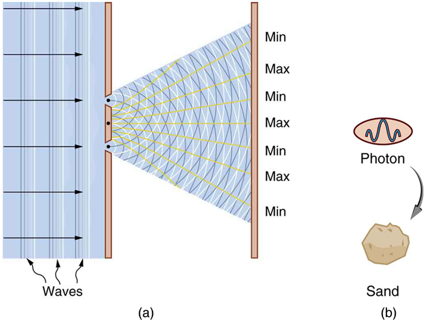
There is no doubt that EM radiation interferes and has the properties of wavelength and frequency. There is also no doubt that it behaves as particles—photons with discrete energy. We call this twofold nature theparticle-wave duality, meaning that EM radiation has both particle and wave properties. This so-called duality is simply a term for properties of the photon analogous to phenomena we can observe directly, on a macroscopic scale. If this term seems strange, it is because we do not ordinarily observe details on the quantum level directly, and our observations yield either particleorwavelike properties, but never both simultaneously.
Since we have a particle-wave duality for photons, and since we have seen connections between photons and matter in that both have momentum, it is reasonable to ask whether there is a particle-wave duality for matter as well. If the EM radiation we once thought to be a pure wave has particle properties, is it possible that matter has wave properties? The answer is yes. The consequences are tremendous, as we will begin to see in the next section.
PHET: EXPLORATIONS: QUANTUM WAVE INTERFERENCE
When do photons, electrons, and atoms behave like particles and when do they behave like waves? Watch waves spread out and interfere as they pass through a double slit, then get detected on a screen as tiny dots. Use quantum detectors to explore how measurements change the waves and the patterns they produce on the screen. Clikc this link todownload PhET simulation.

📖 OpenStax College Physics, Section 29.5. openstax.org · CC BY 4.0
- Describe the Davisson-Germer experiment, and explain how it provides evidence for the wave nature of electrons.
In 1923 a French physics graduate student named Prince Louis-Victor de Broglie (1892–1987) made a radical proposal based on the hope that nature is symmetric. If EM radiation has both particle and wave properties, then nature would be symmetric if matter also had both particle and wave properties. If what we once thought of as an unequivocal wave (EM radiation) is also a particle, then what we think of as an unequivocal particle (matter) may also be a wave. De Broglie’s suggestion, made as part of his doctoral thesis, was so radical that it was greeted with some skepticism. A copy of his thesis was sent to Einstein, who said it was not only probably correct, but that it might be of fundamental importance. With the support of Einstein and a few other prominent physicists, de Broglie was awarded his doctorate.
De Broglie took both relativity and quantum mechanics into account to develop the proposal thatall particles have a wavelength, given by
where \(h\) Planck’s constant and \(p\) is momentum. This is defined to be thede Broglie wavelength. (Note that we already have this for photons, from the equation \(p = h/\lambda\).) The hallmark of a wave is interference. If matter is a wave, then it must exhibit constructive and destructive interference. Why isn’t this ordinarily observed? The answer is that in order to see significant interference effects, a wave must interact with an object about the same size as its wavelength. Since \(h\) is very small, \(\lambda\) is also small, especially for macroscopic objects. A 3-kg bowling ball moving at 10 m/s, for example, has
This means that to see its wave characteristics, the bowling ball would have to interact with something about \(10^{-35} \, m\) in size—far smaller than anything known. When waves interact with objects much larger than their wavelength, they show negligible interference effects and move in straight lines (such as light rays in geometric optics). To get easily observed interference effects from particles of matter, the longest wavelength and hence smallest mass possible would be useful. Therefore, this effect was first observed with electrons.
American physicists Clinton J. Davisson and Lester H. Germer in 1925 and, independently, British physicist G. P. Thomson (son of J. J. Thomson, discoverer of the electron) in 1926 scattered electrons from crystals and found diffraction patterns. These patterns are exactly consistent with interference of electrons having the de Broglie wavelength and are somewhat analogous to light interacting with a diffraction grating (Figure
All microscopic particles, whether massless, like photons, or having mass, like electrons, have wave properties. The relationship between momentum and wavelength is fundamental for all particles.
De Broglie’s proposal of a wave nature for all particles initiated a remarkably productive era in which the foundations for quantum mechanics were laid. In 1926, the Austrian physicist Erwin Schrödinger (1887–1961) published four papers in which the wave nature of particles was treated explicitly with wave equations. At the same time, many others began important work. Among them was German physicist Werner Heisenberg (1901–1976) who, among many other contributions to quantum mechanics, formulated a mathematical treatment of the wave nature of matter that used matrices rather than wave equations. We will deal with some specifics in later sections, but it is worth noting that de Broglie’s work was a watershed for the development of quantum mechanics. De Broglie was awarded the Nobel Prize in 1929 for his vision, as were Davisson and G. P. Thomson in 1937 for their experimental verification of de Broglie’s hypothesis.
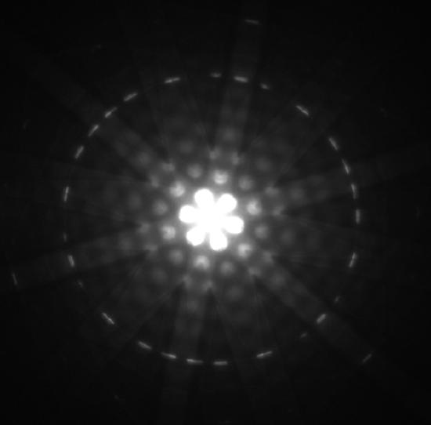
For an electron having a de Broglie wavelength of 0.167 nm (appropriate for interacting with crystal lattice structures that are about this size):
For part (a), since the de Broglie wavelength is given, the electron’s velocity can be obtained from \(\lambda = h/p\) by using the nonrelativistic formula for momentum, \(p = mv\). For part (b), once \(v\) is obtained (and it has been verified that \(v\) is nonrelativistic), the classical kinetic energy is simply \((1/2)mv^2\).
Substituting the nonrelativistic formula for momentum \((p = mv)\) into the de Broglie wavelength gives
Solving for \(v\) gives
Substituting known values yields
While fast compared with a car, this electron’s speed is not highly relativistic, and so we can comfortably use the classical formula to find the electron’s kinetic energy and convert it to eV as requested.
This low energy means that these 0.167-nm electrons could be obtained by accelerating them through a 54.0-V electrostatic potential, an easy task. The results also confirm the assumption that the electrons are nonrelativistic, since their velocity is just over 1% of the speed of light and the kinetic energy is about 0.01% of the rest energy of an electron (0.511 MeV). If the electrons had turned out to be relativistic, we would have had to use more involved calculations employing relativistic formulas.
One consequence or use of the wave nature of matter is found in the electron microscope. As we have discussed, there is a limit to the detail observed with any probe having a wavelength. Resolution, or observable detail, is limited to about one wavelength. Since a potential of only 54 V can produce electrons with sub-nanometer wavelengths, it is easy to get electrons with much smaller wavelengths than those of visible light (hundreds of nanometers). Electron microscopes can, thus, be constructed to detect much smaller details than optical microscopes (Figure .
There are basically two types of electron microscopes. Thetransmission electron microscope(TEM) accelerates electrons that are emitted from a hot filament (the cathode). The beam is broadened and then passes through the sample. A magnetic lens focuses the beam image onto a fluorescent screen, a photographic plate, or (most probably) a CCD (light sensitive camera), from which it is transferred to a computer. The TEM is similar to the optical microscope, but it requires a thin sample examined in a vacuum. However it can resolve details as small as 0.1 nm (\(10^{-10} \, m\)), providing magnifications of 100 million times the size of the original object. The TEM has allowed us to see individual atoms and structure of cell nuclei.
Thescanning electron microscope(SEM) provides images by using secondary electrons produced by the primary beam interacting with the surface of the sample (Figure . The SEM also uses magnetic lenses to focus the beam onto the sample. However, it moves the beam around electrically to “scan” the sample in thexandydirections. A CCD detector is used to process the data for each electron position, producing images like the one at the beginning of this chapter. The SEM has the advantage of not requiring a thin sample and of providing a 3-D view. However, its resolution is about ten times less than a TEM.
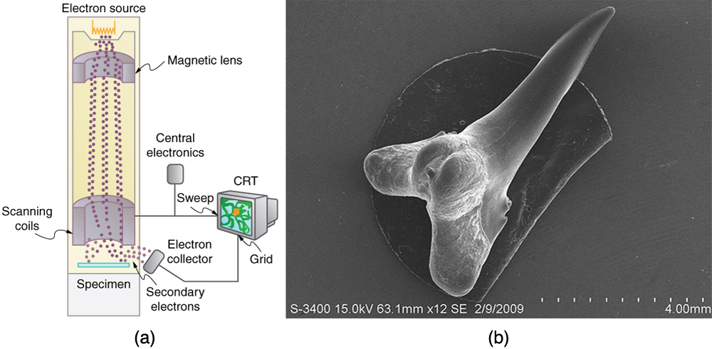
Electrons were the first particles with mass to be directly confirmed to have the wavelength proposed by de Broglie. Subsequently, protons, helium nuclei, neutrons, and many others have been observed to exhibit interference when they interact with objects having sizes similar to their de Broglie wavelength. The de Broglie wavelength for massless particles was well established in the 1920s for photons, and it has since been observed that all massless particles have a de Broglie wavelength \(\lambda = h/p\). The wave nature of all particles is a universal characteristic of nature. We shall see in following sections that implications of the de Broglie wavelength include the quantization of energy in atoms and molecules, and an alteration of our basic view of nature on the microscopic scale. The next section, for example, shows that there are limits to the precision with which we may make predictions, regardless of how hard we try. There are even limits to the precision with which we may measure an object’s location or energy.
The wave nature of matter allows it to exhibit all the characteristics of other, more familiar, waves. Diffraction gratings, for example, produce diffraction patterns for light that depend on grating spacing and the wavelength of the light. This effect, as with most wave phenomena, is most pronounced when the wave interacts with objects having a size similar to its wavelength. For gratings, this is the spacing between multiple slits.) When electrons interact with a system having a spacing similar to the electron wavelength, they show the same types of interference patterns as light does for diffraction gratings, as shown at top left in Figure .
Atoms are spaced at regular intervals in a crystal as parallel planes, as shown in the bottom part of Figure . The spacings between these planes act like the openings in a diffraction grating. At certain incident angles, the paths of electrons scattering from successive planes differ by one wavelength and, thus, interfere constructively. At other angles, the path length differences are not an integral wavelength, and there is partial to total destructive interference. This type of scattering from a large crystal with well-defined lattice planes can produce dramatic interference patterns. It is calledBragg reflection, for the father-and-son team who first explored and analyzed it in some detail. The expanded view also shows the path-length differences and indicates how these depend on incident angle \(\theta\) in a manner similar to the diffraction patterns for x rays reflecting from a crystal.
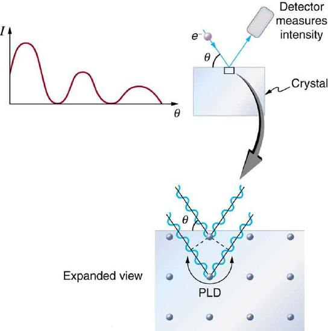
Let us take the spacing between parallel planes of atoms in the crystal to be \(d\). As mentioned, if the path length difference (PLD) for the electrons is a whole number of wavelengths, there will beconstructive interference—that is, \(PLD = n\lambda \, (n = 1, \, 2, \, 3, . . .)\). Because \(AB = BC = d \, \sin \, \theta\), we have constructive interference when
This relationship is called theBragg equationand applies not only to electrons but also to x rays.
The wavelength of matter is a submicroscopic characteristic that explains a macroscopic phenomenon such as Bragg reflection. Similarly, the wavelength of light is a submicroscopic characteristic that explains the macroscopic phenomenon of diffraction patterns.
📖 OpenStax College Physics, Section 29.6. openstax.org · CC BY 4.0
- Use both versions of Heisenberg’s uncertainty principle in calculations.
- Explain the implications of Heisenberg’s uncertainty principle for measurements.
Matter and photons are waves, implying they are spread out over some distance. What is the position of a particle, such as an electron? Is it at the center of the wave? The answer lies in how you measure the position of an electron. Experiments show that you will find the electron at some definite location, unlike a wave. But if you set up exactly the same situation and measure it again, you will find the electron in a different location, often far outside any experimental uncertainty in your measurement. Repeated measurements will display a statistical distribution of locations that appears wavelike (Figure .
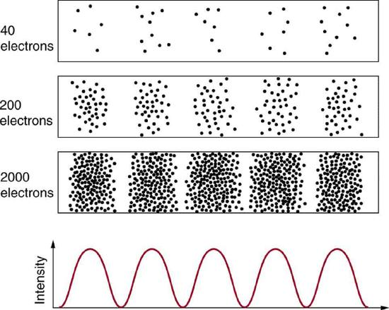
After de Broglie proposed the wave nature of matter, many physicists, including Schrödinger and Heisenberg, explored the consequences. The idea quickly emerged that,because of its wave character, a particle’s trajectory and destination cannot be precisely predicted for each particle individually. However, each particle goes to a definite place (as illustrated in Figure . After compiling enough data, you get a distribution related to the particle’s wavelength and diffraction pattern. There is a certainprobabilityof finding the particle at a given location, and the overall pattern is called aprobability distribution. Those who developed quantum mechanics devised equations that predicted the probability distribution in various circumstances.
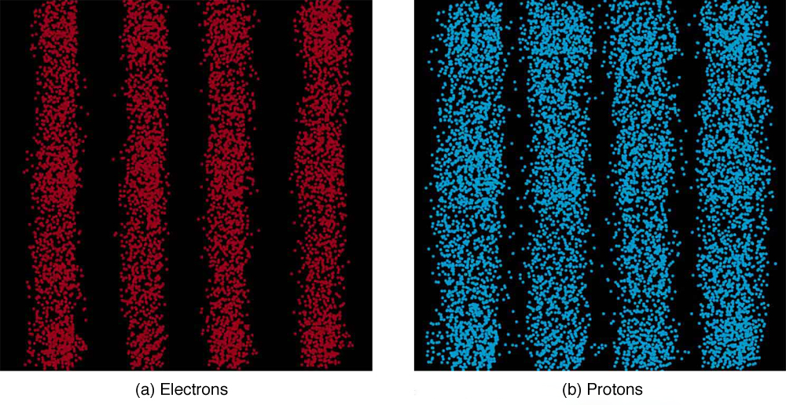
It is somewhat disquieting to think that you cannot predict exactly where an individual particle will go, or even follow it to its destination. Let us explore what happens if we try to follow a particle. Consider the double-slit patterns obtained for electrons and photons in Figure . First, we note that these patterns are identical, following \(d \, sin \, \theta = m\lambda\), the equation for double-slit constructive interference developed inPhoton Energies and the Electromagnetic Spectrum, where \(d\) is the slit separation and \(\lambda\) is the electron or photon wavelength.
Both patterns build up statistically as individual particles fall on the detector. This can be observed for photons or electrons—for now, let us concentrate on electrons. You might imagine that the electrons are interfering with one another as any waves do. To test this, you can lower the intensity until there is never more than one electron between the slits and the screen. The same interference pattern builds up! This implies that a particle’s probability distribution spans both slits, and the particles actually interfere with themselves. Does this also mean that the electron goes through both slits? An electron is a basic unit of matter that is not divisible. But it is a fair question, and so we should look to see if the electron traverses one slit or the other, or both. One possibility is to have coils around the slits that detect charges moving through them. What is observed is that an electron always goes through one slit or the other; it does not split to go through both. But there is a catch. If you determine that the electron went through one of the slits, you no longer get a double slit pattern—instead, you get single slit interference. There is no escape by using another method of determining which slit the electron went through. Knowing the particle went through one slit forces a single-slit pattern. If you do not observe which slit the electron goes through, you obtain a double-slit pattern.
How does knowing which slit the electron passed through change the pattern? The answer is fundamentally important—measurement affects the system being observed. Information can be lost, and in some cases it is impossible to measure two physical quantities simultaneously to exact precision. For example, you can measure the position of a moving electron by scattering light or other electrons from it. Those probes have momentum themselves, and by scattering from the electron, they change its momentumin a manner that loses information. There is a limit to absolute knowledge, even in principle.
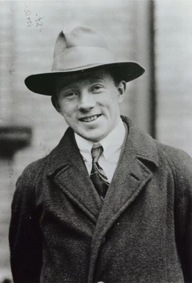
It was Werner Heisenberg who first stated this limit to knowledge in 1929 as a result of his work on quantum mechanics and the wave characteristics of all particles. (Figure . Specifically, consider simultaneously measuring the position and momentum of an electron (it could be any particle). There is anuncertainty in position \(\Delta x\)that is approximately equal to the wavelength of the particle. That is,
As discussed above, a wave is not located at one point in space. If the electron’s position is measured repeatedly, a spread in locations will be observed, implying an uncertainty in position \(\Delta x\). To detect the position of the particle, we must interact with it, such as having it collide with a detector. In the collision, the particle will lose momentum. This change in momentum could be anywhere from close to zero to the total momentum of the particle, \(p = h/\lambda\). It is not possible to tell how much momentum will be transferred to a detector, and so there is anuncertainty in momentum\(\Delta p\), too. In fact, the uncertainty in momentum may be as large as the momentum itself, which in equation form means that
The uncertainty in position can be reduced by using a shorter-wavelength electron, since \(\Delta x \approx \lambda\). But shortening the wavelength increases the uncertainty in momentum, since \(\Delta p \approx h/\lambda\). Conversely, the uncertainty in momentum can be reduced by using a longer-wavelength electron, but this increases the uncertainty in position. Mathematically, you can express this trade-off by multiplying the uncertainties. The wavelength cancels, leaving
So if one uncertainty is reduced, the other must increase so that their product is \(\approx h\).
With the use of advanced mathematics, Heisenberg showed that the best that can be done in asimultaneous measurement of position and momentumis
This is known as theHeisenberg uncertainty principle. It is impossible to measure position \(x\) and momentum \(p\) simultaneously with uncertainties \(\Delta x\) and \(\Delta p\) that multiply to be less than \(h/4\pi\). Neither uncertainty can be zero. Neither uncertainty can become small without the other becoming large. A small wavelength allows accurate position measurement, but it increases the momentum of the probe to the point that it further disturbs the momentum of a system being measured. For example, if an electron is scattered from an atom and has a wavelength small enough to detect the position of electrons in the atom, its momentum can knock the electrons from their orbits in a manner that loses information about their original motion. It is therefore impossible to follow an electron in its orbit around an atom. If you measure the electron’s position, you will find it in a definite location, but the atom will be disrupted. Repeated measurements on identical atoms will produce interesting probability distributions for electrons around the atom, but they will not produce motion information. The probability distributions are referred to as electron clouds or orbitals. The shapes of these orbitals are often shown in general chemistry texts and are discussed inThe Wave Nature of Matter Causes Quantization.
The uncertainty in position is the accuracy of the measurement, or \(\Delta x = 0.0100 \, nm\). Thus the smallest uncertainty in momentum \(\Delta p\) can be calculated using \(\Delta x \Delta p \geq h/4\pi\). Once the uncertainty in momentum \(\Delta p\) is found, the uncertainty in velocity can be found from \(\Delta p = m\Delta v\).
Using the equals sign in the uncertainty principle to express the minimum uncertainty, we have
Solving for \(\Delta p\) and substituting known values gives
Solving for \(\Delta v\) and substituting the mass of an electron gives
Although large, this velocity is not highly relativistic, and so the electron’s kinetic energy is
Since atoms are roughly 0.1 nm in size, knowing the position of an electron to 0.0100 nm localizes it reasonably well inside the atom. This would be like being able to see details one-tenth the size of the atom. But the consequent uncertainty in velocity is large. You certainly could not follow it very well if its velocity is so uncertain. To get a further idea of how large the uncertainty in velocity is, we assumed the velocity of the electron was equal to its uncertainty and found this gave a kinetic energy of 95.5 eV. This is significantly greater than the typical energy difference between levels in atoms (see[link]), so that it is impossible to get a meaningful energy for the electron if we know its position even moderately well.
Why don’t we notice Heisenberg’s uncertainty principle in everyday life? The answer is that Planck’s constant is very small. Thus the lower limit in the uncertainty of measuring the position and momentum of large objects is negligible. We can detect sunlight reflected from Jupiter and follow the planet in its orbit around the Sun. The reflected sunlight alters the momentum of Jupiter and creates an uncertainty in its momentum, but this is totally negligible compared with Jupiter’s huge momentum. The correspondence principle tells us that the predictions of quantum mechanics become indistinguishable from classical physics for large objects, which is the case here.
There is another form ofHeisenberg’s uncertainty principleforsimultaneous measurements of energy and time. In equation form,
where \(\Delta E\) is theuncertainty in energyand \(\Delta t\), is theuncertainty in time. This means that within a time interval \(\Delta t\), it is not possible to measure energy precisely—there will be an uncertainty \(\Delta E\) in the measurement. In order to measure energy more precisely (to make \(\Delta E\) smaller), we must increase \(\Delta t\). This time interval may be the amount of time we take to make the measurement, or it could be the amount of time a particular state exists, as in the nextExample.
An atom in an excited state temporarily stores energy. If the lifetime of this excited state is measured to be \(1.0 \times 10^{-10} \, s\),
what is the minimum uncertainty in the energy of the state in eV?
The minimum uncertainty in energy \(\Delta E\) is found by using the equals sign in \(\Delta E\Delta t \geq h/4\pi\) and corresponds to a reasonable choice for the uncertainty in time. The largest the uncertainty in time can be is the full lifetime of the excited state, or \(\Delta t = 1.0 \times 10^{-10} \, s\).
Solving the uncertainty principle for \(\Delta E\) and substituting known values gives
Now converting to eV yields
The lifetime of \(10^{-10} \, s\) is typical of excited states in atoms—on human time scales, they quickly emit their stored energy. An uncertainty in energy of only a few millionths of an eV results. This uncertainty is small compared with typical excitation energies in atoms, which are on the order of 1 eV. So here the uncertainty principle limits the accuracy with which we can measure the lifetime and energy of such states, but not very significantly.
The uncertainty principle for energy and time can be of great significance if the lifetime of a system is very short. Then \(\Delta t\) is very small, and \(\Delta E\) is consequently very large. Some nuclei and exotic particles have extremely short lifetimes (as small as \(10^{-25} \, s\)), causing uncertainties in energy as great as many GeV \(10^9 \, eV\). Stored energy appears as increased rest mass, and so this means that there is significant uncertainty in the rest mass of short-lived particles. When measured repeatedly, a spread of masses or decay energies are obtained. The spread is \(\Delta E\). You might ask whether this uncertainty in energy could be avoided by not measuring the lifetime. The answer is no. Nature knows the lifetime, and so its brevity affects the energy of the particle. This is so well established experimentally that the uncertainty in decay energy is used to calculate the lifetime of short-lived states. Some nuclei and particles are so short-lived that it is difficult to measure their lifetime. But if their decay energy can be measured, its spread is \(\Delta E\) and this is used in the uncertainty principle \((\Delta E \Delta t \geq h/4\pi)\) to calculate the lifetime \(\Delta t\).
There is another consequence of the uncertainty principle for energy and time. If energy is uncertain by \(\Delta E\), then conservation of energy can be violated by \(\Delta E\) for a time \(\Delta t\). Neither the physicist nor nature can tell that conservation of energy has been violated, if the violation is temporary and smaller than the uncertainty in energy. While this sounds innocuous enough, we shall see in later chapters that it allows the temporary creation of matter from nothing and has implications for how nature transmits forces over very small distances.
Finally, note that in the discussion of particles and waves, we have stated that individual measurements produce precise or particle-like results. A definite position is determined each time we observe an electron, for example. But repeated measurements produce a spread in values consistent with wave characteristics. The great theoretical physicist Richard Feynman (1918–1988) commented, “What there are, are particles.” When you observe enough of them, they distribute themselves as you would expect for a wave phenomenon. However, what there are as they travel we cannot tell because, when we do try to measure, we affect the traveling.
📖 OpenStax College Physics, Section 29.7. openstax.org · CC BY 4.0
- Explain the concept of particle-wave duality, and its scope.
Particle-wave duality--the fact that all particles have wave properties--is one of the cornerstones of quantum mechanics. We first came across it in the treatment of photons, those particles of EM radiation that exhibit both particle and wave properties, but not at the same time. Later it was noted that particles of matter have wave properties as well. The dual properties of particles and waves are found for all particles, whether massless like photons, or having a mass like electrons. (See Figure 29.9.1.)
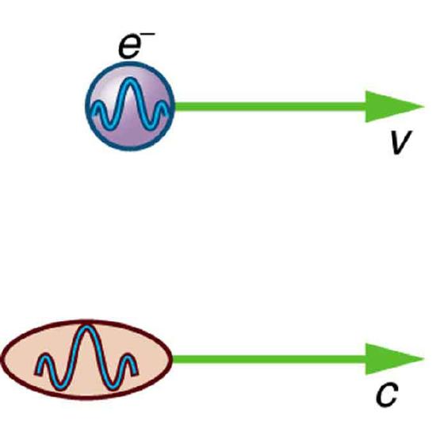
There are many submicroscopic particles in nature. Most have mass and are expected to act as particles, or the smallest units of matter. All these masses have wave properties, with wavelengths given by the de Broglie relationship \(\gamma = h/p\). So, too, do combinations of these particles, such as nuclei, atoms, and molecules. As a combination of masses becomes large, particularly if it is large enough to be called macroscopic, its wave nature becomes difficult to observe. This is consistent with our common experience with matter.
Some particles in nature are massless. We have only treated the photon so far, but all massless entities travel at the speed of light, have a wavelength, and exhibit particle and wave behaviors. They have momentum given by a rearrangement of the de Broglie relationship, \(p = h/\gamma\). In large combinations of these massless particles (such large combinations are common only for photons or EM waves), there is mostly wave behavior upon detection, and the particle nature becomes difficult to observe. This is also consistent with experience. (See Figure 29.9.2.)
![A massive rock is shown on the left. A massless wave is shown on the right. The propagation of the wave is shown in three dimensional planes, with the variation of two components, E and B. E is a sine wave in one plane with small arrows showing the direction of vibrations. B is a sine wave in a plane perpendicular to the E wave. The B wave has arrows to show the vibrations of particles in the B plane. The waves are shown intersecting each other at the junction of the planes because E and B are perpendicular to each other. The direction of propagation of the wave is shown perpendicular to both E and B waves.](images/ch29/fig29-29-a-massive-rock-is-shown-on-the-left-a-ma.jpg)
The particle-wave duality is a universal attribute. It is another connection between matter and energy. Not only has modern physics been able to describe nature for high speeds and small sizes, it has also discovered new connections and symmetries. There is greater unity and symmetry in nature than was known in the classical era -- but they were dreamt of. A beautiful poem written by the English poet William Blake some two centuries ago contains the following four lines:
To see the World in a Grain of Sand
And a Heaven in a Wild Flower
Hold Infinity in the palm of your hand
And Eternity in an hour
The problem set for this section involves concepts from this chapter and several others. Physics is most interesting when applied to general situations involving more than a narrow set of physical principles. For example, photons have momentum, hence the relevance of "Linear Momentum and Collisions." The following topics are involved in some or all of the problems in this section:
PROBLEM-SOLVING STRATEGY
The following topics are involved in this integrated concepts worked example
A 550-nm photon (visible light) is absorbed by a \(1.00-\mu g\) particle of dust in outer space. (a) Find the momentum of such a photon. (b) What is the recoil velocity of the particle of dust, assuming it is initially at rest?
To solve anintegrated-concept problem, such as those following this example, we must first identify the physical principles involved and identify the chapters in which they are found. Part (a) of this example asks for themomentum of a photon, a topic of the present chapter. Part (b) considersrecoil following a collision,a topic of "Linear Momentum and Collisions."
The following solutions to each part of the example illustrate how specific problem-solving strategies are applied. These involve identifying knowns and unknowns, checking to see if the answer is reasonable, and so on.
The momentum of a photon is related to its wavelength by the equation:
Entering the known value for Planck’s constant \(h\) and given the wavelength \(\lambda\), we obtain
This momentum is small, as expected from discussions in the text and the fact that photons of visible light carry small amounts of energy and momentum compared with those carried by macroscopic objects.
Conservation of momentum in the absorption of this photon by a grain of dust can be analyzed using the equation:
The net external force is zero, since the dust is in outer space. Let 1 represent the photon and 2 the dust particle. Before the collision, the dust is at rest (relative to some observer); after the collision, there is no photon (it is absorbed). So conservation of momentum can be written \[p_{1} = p'_{2} = mv, \label{29.9.3}\] where \(p_{1}\) is the photon momentum before the collision and \(p'_{2}\) is the dust momentum after the collision. The mass and recoil velocity of the dust are \(m\) and \(v\), respectively. Solving this for \(v\), the requested quantity, yields \[v = \frac{p}{m},\label{29.9.4}\] where \(p\) is the photon momentum found in part (a). Entering known values (noting that a microgram is \(10^{-9} kg\)) gives \[v = \frac{1.21 \times 10^{27} kg\cdot m/s}{1.00 \times 10^{9} kg}\] \[= 1.21 \times 10^{-18} m/s.\]
The recoil velocity of the particle of dust is extremely small. As we have noted, however, there are immense numbers of photons in sunlight and other macroscopic sources. In time, collisions and absorption of many photons could cause a significant recoil of the dust, as observed in comet tails.
📖 OpenStax College Physics, Section 29.8. openstax.org · CC BY 4.0
| Section | Title |
|---|---|
| 29.1 | 29.1: Quantization of Energy |
| 29.2 | 29.2: The Photoelectric Effect |
| 29.3 | 29.3: Photon Energies and the Electromagnetic Spectrum |
| 29.4 | 29.4: Photon Momentum |
| 29.5 | 29.5: The Particle-Wave Duality of Light |
| 29.6 | 29.6: The Wave Nature of Matter |
| 29.7 | 29.7: Probability and The Heisenberg Uncertainty Principle |
| 29.8 | 29.8: The Particle-Wave Duality Reviewed |